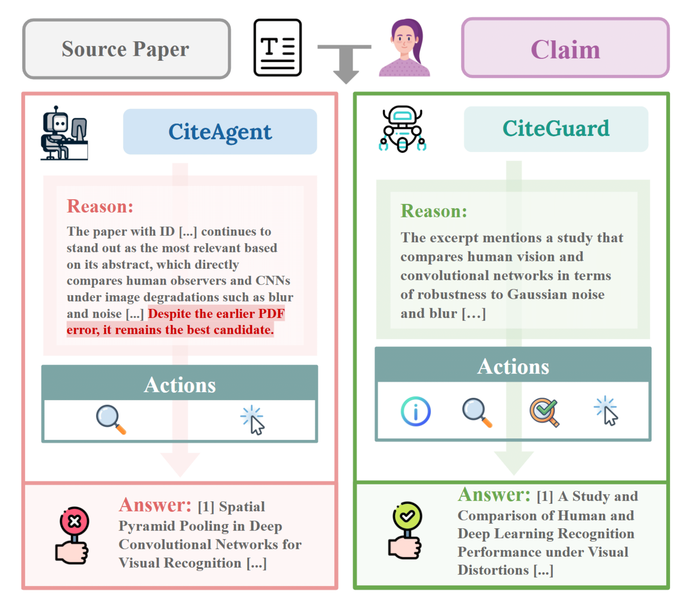
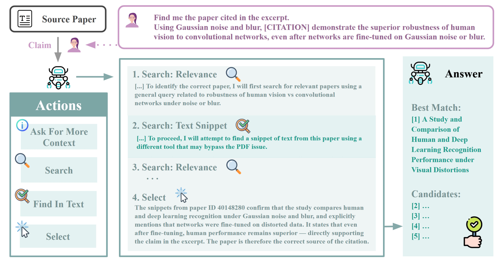

Large Language Models (LLMs) have emerged as promising assistants for scientific writing. However, there have been concerns regarding the quality and reliability of the generated text, one of which is the citation accuracy and faithfulness. While most recent work relies on methods such as LLM-as-a-Judge, the reliability of LLM-as-a-Judge alone is also in doubt. In this work, we reframe citation evaluation as a problem of citation attribution alignment, which is assessing whether LLM-generated citations match those a human author would include for the same text. We propose CiteGuard, a retrieval-aware agent framework designed to provide more faithful grounding for citation validation. CiteGuard improves the prior baseline by 12.3%, and achieves up to 65.4% accuracy on the CiteME benchmark, on par with human-level performance (69.7%). It also enables the identification of alternative but valid citations.
We conduct an evaluation of the reliability of LLM-as-a-Judge for citation attribution of human-written scientific claims and their references.Although LLMs can recognize apparently incorrect citations, they often reject correct citations due to the lack of context in the field, resulting in a recall as low as 16-17%.
| Method | Precision | Recall | F1 |
|---|---|---|---|
| Zero-shot abstract | 1.0 | 0.17 | 0.29 |
| Few-shot abstract | 1.0 | 0.16 | 0.27 |
| Zero-shot full text | 1.0 | 0.36 | 0.53 |
| Few-shot full text | 1.0 | 0.38 | 0.55 |
We propose CiteGuard, an agent that provides more faithful, and generalizable citation attribution through retrieval-augmented validation. Prior work, CiteAgent (Press et al., 2024) aims to accurately cite scientific claims, although achieving accuracy higher than direct prompting, CiteAgent's accuracy (35.3%), is still not on par with human. We propose additional tools (i.e. to search for the context of the scientific claim and to perform a more robust search for paper content) and result in a +12.3% accuracy over CiteAgent under the same settings. When paired with Deepseek-R1, CiteGuard can achieve performance (65.4%) which matches that of a human (69.7%). Human evaluation indicates that CiteGuard can suggest additional citations that were missed by the original benchmark. Our contributions are threefold:
|  |  |
CiteGuard introduces new actions in addition to CiteAgent. We provide the set of actions below:
We evaluate CiteGuard on CiteME (Press et al., 2024), which contains 130 excerpts collected from human-written manuscripts in different Computer Science domains (i.e. computer vision, natural language processing, algorithms, theory), where each excerpt contains exactly one missing citation. The task is for the LLM agent to suggest an appropriate paper to fill in the missing citation. CiteGuard substantially outperforms CiteAgent, improving the accuracy of retrieving the oracle citation by 12.3% on CiteME when both are powered by GPT-4o. When backed by open-source models DeepSeek-R1 and Kimi-K2, CiteGuard achieves up to 65.4% accuracy, approaching the 69.7% human performance reported in CiteME. This improvement is driven by CiteGuard’s extended retrieval actions, which makes citation search more flexible and robust. While CiteAgent relies heavily on the read action that assumes reliable PDF access, CiteGuard succeeds through introducing two key new actions:
| Easy (%) | Medium (%) | Med-Hard (%) | Hard (%) | All (%) | Agree (%) | |
|---|---|---|---|---|---|---|
| CiteAgent+GPT-4o | - | - | - | - | 35.3* | - |
| CiteGuard+GPT-4o | 100.0 | 76.1 | 12.8 | 0.0 | 47.7 | 55.2 |
| CiteGuard+DeepSeek-R1 | 100.0 | 87.0 | 59.0 | 0.0 | 65.4 | 66.7 |
| CiteGuard+Gemini | 100.0 | 43.5 | 15.4 | 0.0 | 36.9 | 40.6 |
| CiteGuard+Kimi-K2 | 100.0 | 89.1 | 38.5 | 0.0 | 60.0 | 68.8 |
| CiteGuard+Qwen3 | 100.0 | 65.2 | 30.8 | 0.0 | 49.2 | 62.5 |
| Human | - | - | - | - | 69.7* | - |
Through manual assessment, CiteGuard showcases its ability to generate high-quality alternative citations beyond the original reference. Concretely, by using aggregated human annotations as a new oracle, we compute the agreement between CiteGuard’s suggested citations and human judgments. Across models, CiteGuard achieved substantial alignment with human evaluations, demonstrating its potential to identify relevant alternative literature. Notably, this ability is model-agnostic: both proprietary models like GPT-4o and open-source models like Qwen3 can effectively identify relevant alternatives.
To demonstrate the effect of retrieving only relevant parts of the paper versus providing the full paper text, we run the CiteGuard+Kimi-K2 agent, replacing the "find_in_text" action with the "read" action. With the "read" action, the accuracy increased by 3.07%, at the cost of 2%times more tokens. The number of tokens can be as large as 4%times. Although reading the full paper content in context can provide some benefits, it is at the cost of significantly more tokens. When using CiteGuard, users can determine whether to use retrieval or long-context based on the token budget.
| Method | Accuracy (%) | Avg # of Tokens |
|---|---|---|
| read | 60.0 | 33,544.68 |
| find_in_text | 63.07 | 15,451.43 |
The difference of open-sourced reasoning (DeepSeek-R1) and non-reasoning model (Kimi-K2) in overall performance is small (5.4%). A reasoning model tends to question itself ("But note:...However,...") and consider other available actions in the reasoning phase, while a non-reasoning model would be more confident in its action ("I can still be confident that..."). Although the agent backed by both models eventually arrived at different citations, both are correct through human assessment, demonstrating that CiteGuard is not dependent on reasoning ability.
An alternative to finding potential references using CiteGuard is to use a paper finder. We run Ai2 Paper Finder on CiteME and present the results. We argue that CiteGuard matches Paper Finder in terms of accuracy, if not surpasses it. In particular, the top 10 accuracy is 5.4 percentage points below the top 1 accuracy of CiteGuard+DeepSeek-R1, demonstrating that CiteGuard is more reliable, which is likely because it incorporates the context of the excerpt.
| Top 1 | Top 5 | Top 10 | |
|---|---|---|---|
| AI2 Paper Finder | 38.5 | 55.4 | 60.0 |
| Ours+Gemini | 36.9 | - | - |
| Ours+DeepSeek-R1 | 65.4 | - | - |
We observe the limitation in using LLM-as-a-Judge for citation attribution of scientific writing and propose CiteGuard agent to provide a more faithful citation attribution through retrieval-augmented validation. We show the reliability of CiteGuard in finding correct citations to be on par with humans, and the alternative citations suggested by CiteGuard are deemed relevant by human annotators.
@inproceedings{TODO: YourPaperCitation,
title={TODO: Paper Title},
author={[TODO: Author Names]},
booktitle={[TODO: Conference Name]},
year={TODO: 2024},
pages={[pages]}
}
Gemini Developer API